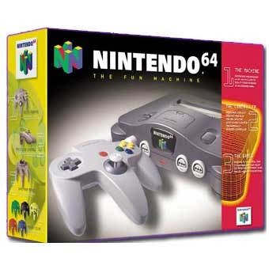
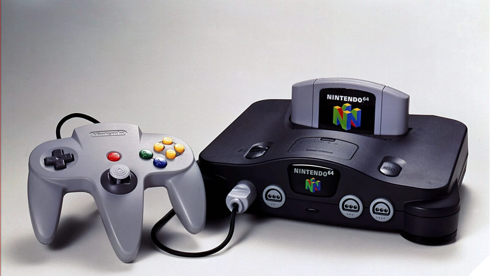
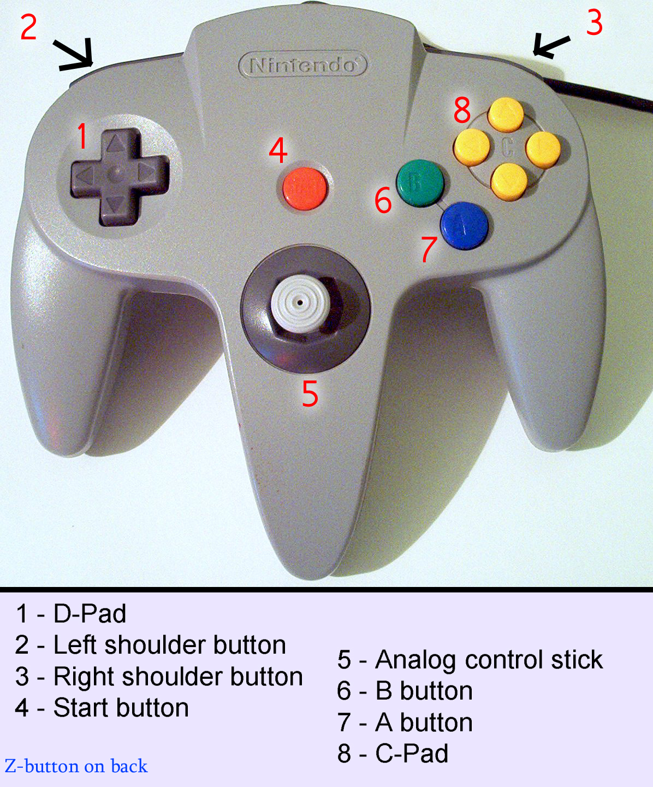
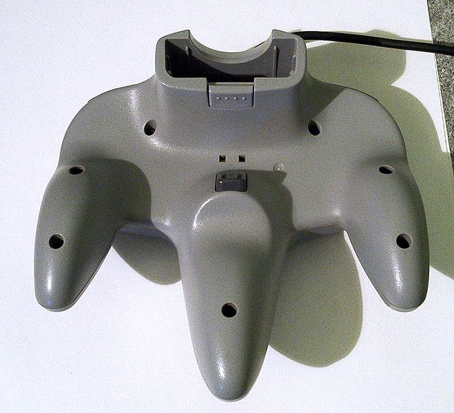

Nintendo 64 Controller
The Nintendo 64 came out on June 23 1996 in Japan, but didn't come to Australia until March 1 1997.
 The N64 controller is a very unique controller consisting of 3 handles, an analog joy stick and a back trigger
The port at the back of the controller is for extensions such as a rumble pack and extra memory
 